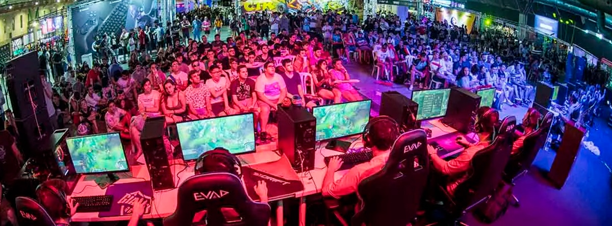
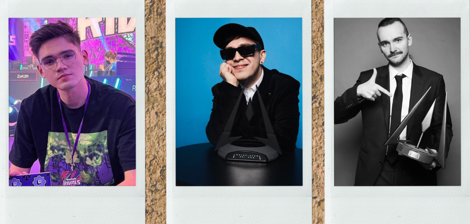

El Arte de la imaginación.
En el vasto paisaje del entretenimiento digital, hay una fuerza motriz que trasciende los límites de lo ordinario,
una entidad cuyo nombre evoca maravilla y emoción en igual medida: Kingdom Gaming.
Como pioneros en el arte del juego interactivo, esta empresa ha tejido su legado en la trama misma de la cultura de los videojuegos,
transformando mundo virtuales en reinos de asomnro y aventura.
Comunidad y Colaboración
pero Kingdom Gaming no solo se trata de crear juegos excepcionalaes; tambien se
trata de construir comunidades duradera. A través de eventos en línea, redes sociales y colaboraciones
con fans, la empresa fomenta un sentido de comunidad entre sus juagores, donde pueden compartir su
pasión por sus titulos favoritos y participar en emcionantes discusiones sobre el futuro del gaming.

Mirando hacia el futuro
El futuro de Kingdom Gaming es tan brillante como sus juegos. Con un equipo de talentosos desarrolladores y una base de fans apasionada,
la empresa continúa desafiando los límites de lo posible en el mundo del entretenimeinto interactivo.
Desde nuevas entrgas de sus series más queridas hasta la exploracion de nuevos terriorios creativos,
el futuro promete emocionantes aventuras para jugadores de todas partes.
